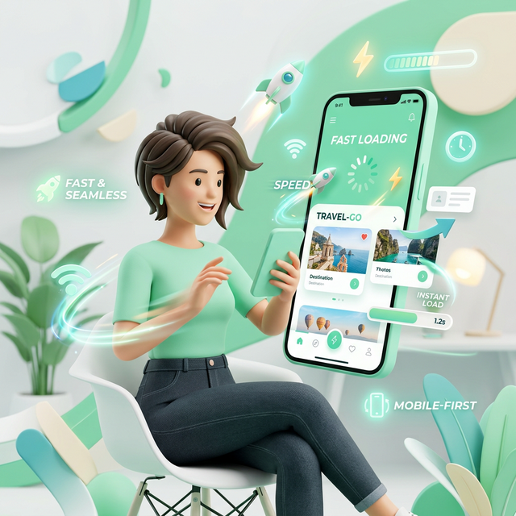

Why Mobile Optimization is Critical

For over a decade, the phrase "mobile-first" has been the mantra of the digital industry. Yet, despite this widespread acknowledgment, a vast number of content creators and marketers still design, strategize, and optimize primarily for the desktop experience. They edit videos on large monitors, write thumbnails that look crisp on 27-inch screens, and share links without considering how they render on a 6-inch display.
This disconnect is no longer just a minor oversight; it is a critical strategic failure. As we move through 2026, the dominance of mobile devices has shifted from a trend to an absolute reality. For platforms like YouTube, Instagram, and TikTok, mobile is not an alternative channel; it is the primary channel. Ignoring mobile optimization is akin to opening a store but locking the front door where 80% of your customers are trying to enter.
This comprehensive guide will explore why mobile optimization is the single most important factor in modern content growth. We will delve into the psychology of the mobile user, the technical pitfalls that kill engagement, and the specific strategies you must implement to ensure your content thrives in a handheld world.
The Reality Check: By The Numbers
Before diving into strategy, we must confront the data. The statistics regarding mobile consumption are not just impressive; they are overwhelming.
- YouTube: Over 70% of total watch time on YouTube comes from mobile devices. In some demographics, particularly Gen Z, this number exceeds 85%.
- Social Media: Platforms like Instagram and TikTok are virtually exclusive to mobile. Desktop usage is negligible for content consumption.
- Email: More than 60% of emails are opened first on a mobile device.
If your content is optimized for the remaining 30% (desktop), you are actively alienating the majority of your potential audience. You are designing for the minority while the majority struggles to consume your work.
The Psychology of the Mobile User
Mobile optimization is not just about shrinking a desktop layout to fit a smaller screen. It requires a fundamental shift in understanding user behavior. The "mobile mindset" is distinct from the "desktop mindset."
1. The Micro-Moment Economy
Desktop users often sit down with the intent to work, learn, or binge-watch for extended periods. Mobile users, however, exist in a state of fragmented attention. They are watching while commuting, waiting in line, or relaxing on the couch. These are "micro-moments."
In these moments, patience is non-existent. If a video takes too long to buffer, if a link opens a slow browser instead of the app, or if text is too small to read without zooming, the user swipes away instantly. Mobile optimization is essentially friction reduction.
2. The Thumb Zone
Ergonomics play a huge role in mobile interaction. Most users hold their phones with one hand and navigate with their thumb. This creates a "Thumb Zone"—an area of the screen that is easy to reach.
If your call-to-action buttons, links, or interactive elements are placed in the top corners of the screen (easy for a mouse, hard for a thumb), engagement drops. Mobile optimization means designing for the human hand, not just the pixel grid.
The Technical Pitfalls: Where Creators Lose Views
Even with great content, technical failures can destroy your mobile performance. Here are the most common killers of mobile engagement.
1. The "In-App Browser" Trap
This is the single biggest issue for creators sharing links. When a user clicks a YouTube link inside Instagram, TikTok, or Twitter, it often opens in the platform's internal web view (an in-app browser).
These browsers are notoriously poor. They are slow, they often log users out of YouTube, and they lack key features like "Mini-player" or easy access to the "Subscribe" button. A user who wants to watch your video ends up fighting a login wall.
The Fix: You must use Deep Linking (or App-Opening Links). These smart links detect the device and force the content to open in the native YouTube app, bypassing the clunky browser entirely. This seamless transition is critical for retaining mobile traffic.
2. Unreadable Thumbnails and Text
On a 4K monitor, your thumbnail looks incredible. But on a smartphone held at arm's length, that same image is the size of a postage stamp.
- Text Legibility: If your thumbnail has more than 3-4 words, it is likely unreadable on mobile. Small text turns into blurry noise.
- Facial Expressions: Mobile users connect with emotions. Extreme close-ups of faces with clear expressions perform significantly better on small screens than wide shots of landscapes or groups.
3. Slow Load Times
Mobile networks (even 5G) can be inconsistent. If your landing pages, link-in-bio sites, or video intros are heavy with unoptimized assets, load times increase. Google data shows that as page load time goes from 1 second to 3 seconds, the probability of bounce increases by 32%. On mobile, speed is a feature.
Strategic Mobile Optimization: A Checklist
How do you pivot your strategy to prioritize mobile? Here is a practical checklist for creators.
Optimize Your Visuals for Small Screens
Design your thumbnails on your phone, not just your computer. Before publishing, send the image to your device and view it at actual size. Can you read the text? Is the subject clear? If not, simplify. Use high-contrast colors and larger fonts. Remember: Simple scales; complex clutter.
Front-Load Your Hooks
Mobile users scroll fast. You have less than 3 seconds to capture attention. Do not start with a long intro or a slow logo animation. Start immediately with the value proposition or the climax of the story. Respect the user's time and data plan.
Implement Deep Linking Everywhere
Audit every place you share a link: Instagram Bio, TikTok Profile, Twitter Posts, Email Newsletters, and WhatsApp broadcasts. Replace every standard URL with a deep link (using tools like OpeninYoutube). Ensure that 100% of your mobile traffic lands directly in the YouTube app. This is the highest-ROI technical change you can make.
Design for Vertical Consumption
With the rise of Shorts, Reels, and TikToks, vertical video is no longer optional. Even if your main content is horizontal (16:9), create vertical teasers (9:16) for promotion. Meet the user in their natural scrolling orientation. Don't force them to rotate their device unless absolutely necessary.
Key Insight: YouTube's algorithm prioritizes "Session Time." If your mobile links open in a browser and the user leaves quickly, your session time drops. If they open in the app and binge-watch, your session time soars. Mobile optimization directly influences algorithmic promotion.
The SEO Implications of Mobile-First
Search engines have officially moved to Mobile-First Indexing. This means Google predominantly uses the mobile version of the content for indexing and ranking.
If you have a companion website or blog for your videos, and it is not mobile-responsive, your search rankings will suffer. This reduces your organic discovery. Ensuring your entire digital footprint is mobile-friendly is essential for long-term discoverability.
Common Mobile Mistakes to Avoid
- Ignoring Dark Mode: Many mobile users browse in Dark Mode. Ensure your thumbnails and branding look good against both white and black backgrounds.
- Pop-Ups and Interstitials: Nothing enrages a mobile user more than a pop-up that covers the entire screen and is hard to close. Avoid these at all costs on mobile landing pages.
- Horizontal-Only CTAs: Don't ask mobile users to "Click the link below" if the link is actually in your bio (above). Give clear, platform-specific instructions (e.g., "Tap the link in my bio").
Warning: Do not treat mobile as an afterthought. "We'll fix it for mobile later" is a recipe for failure. In 2026, if it doesn't work perfectly on a phone, it doesn't work.
The Future: Mobile-Only Features
Platforms are increasingly releasing features that are exclusive to mobile. YouTube Shorts, Instagram Stories, and TikTok effects are all mobile-native concepts. Desktop users often cannot even access these features fully.
By optimizing for mobile, you position yourself to take advantage of these new growth vectors early. You become fluent in the language of the platform, whereas desktop-focused creators are left translating.
Conclusion: Respect the Hand That Holds the Screen
Mobile optimization is ultimately about respect. It is about respecting your audience's time, their device limitations, and their behavior. It is acknowledging that the world has changed, and the screen in their pocket is now the center of their digital universe.
The creators who win in this environment are those who remove friction. They make it easy to watch, easy to click, and easy to subscribe. They understand that a seamless mobile experience is not just a technical requirement; it is the foundation of trust and growth.
Take a hard look at your content today. View it through the lens of a smartphone user. Fix the broken links, simplify the thumbnails, and embrace the mobile-first reality. Your analytics—and your audience—will thank you.
Want More Creator Tips?
Join thousands of creators who use OpeninYoutube to grow their channels.
Sign Up Now